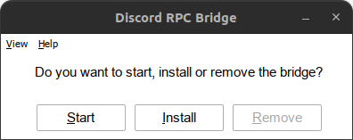
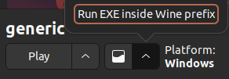
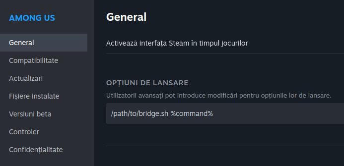
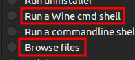
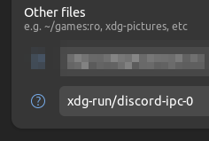

Installation
Installation will copy itself to C:\windows\bridge.exe and create a Windows service.
Logs are stored in C:\windows\logs\bridge.log.
Installing inside a prefix
Wine (~/.wine)
- Double click
bridge.exeand clickInstall.
- To remove, the same process can be followed, but click
Removeinstead.
Lutris
- Click on a game and select
Run EXE inside Wine prefix.
- The same process can be followed as in Wine.
Steam
There are two ways to install the bridge on Steam.
Using bridge.sh1
This method is recommended because it's easier to manage.
- Right click on the game and select
Properties. - Under
Set Launch Options, add the following:
Of course, you need to replace/path/to/bridge.shwith the actual path to the script.
Note
bridge.sh must be in the same directory as bridge.exe.
Using Protontricks
- Open Protontricks and select the game you want to install the bridge to.
- Select
Select the default wineprefix - Select
Browse filesand copy contents ofbuildto the game's prefixdrive_c - Select
Run a Wine cmd shelland runC:\> install.bat- If you are not in
C:\, typec:and press enter
- If you are not in

If you use Flatpak
If you are running Steam, Lutris, etc in a Flatpak, you will need to allow the bridge to access the /run/user/1000/discord-ipc-0 file.
You can do this by using Flatseal or the terminal.
Add xdg-run/discord-ipc-0 under Filesystems category

- Per application
flatpak override --filesystem=xdg-run/discord-ipc-0 <flatpak app name>
- Globally
flatpak override --user --filesystem=xdg-run/discord-ipc-0
macOS
The steps for MacOS are almost the same, but due to the way $TMPDIR works, you will have to install a LaunchAgent.
- Download the latest build from the releases
- Open the archive and make the
launchd.shscript executable by doing:chmod +x launchd.sh - To install the LaunchAgent, run
./launchd installand to remove it simply run./launchd remove.
The script will add a LaunchAgent to your user, that will symlink the $TMPDIR directory to /tmp/rpc-bridge/tmpdir.
Note
You will need to launch the bridge.exe file manually in Wine at least once for it to register and launch automatically the next time.
Run without installing the service
If you prefer not to use the service, you can manually run bridge.exe within the Wine prefix.
This method is compatible with both Wine and Lutris.
In Lutris, you can achieve this by adding the path to bridge.exe in the Executable field under Game options. In Arguments field, be sure to include the Windows path to the game's executable.
Executable
/mnt/games/lutris/league-of-legends/drive_c/Riot Games/League of Legends/LeagueClient.exe
Arguments
--locale=en_US --launch-product=league_of_legends --launch-patchline=live
Executable
/mnt/games/lutris/league-of-legends/drive_c/bridge.exe
Arguments
"C:\Riot Games\League of Legends\LeagueClient.exe" --locale=en_US --launch-product=league_of_legends --launch-patchline=live
In Wine, all you need to do is run bridge.exe and select Start.
Compiling from source
- Install the
wine,gcc-mingw-w64andmakepackages. - Open a terminal in the directory that contains this file and run
make. - The compiled executable will be located in
build/bridge.exe.